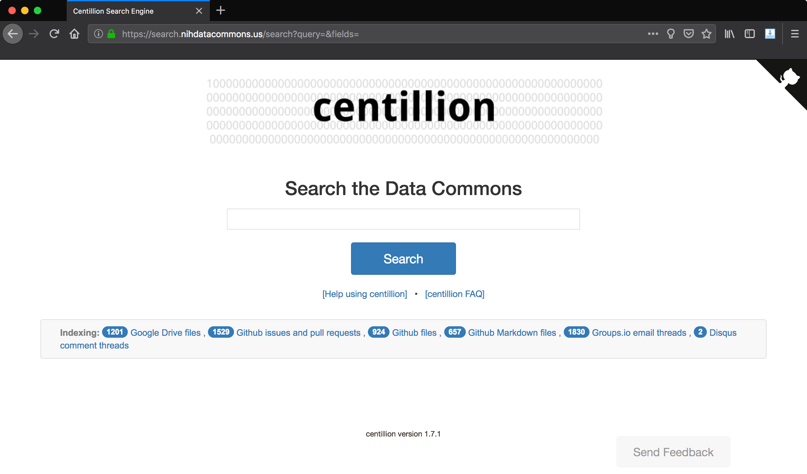

Background: a bit about the Data Commons
It has been a productive but busy summer at the Lab for Data Intensive Biology.
As part of my job, I am supporting a lot of websites and infrastructure for the Data Commons Pilot Phase Consortium (DCPPC), which wrapped up Phase 1 this month.
The Data Commons is a large-scale effort to establish a community-driven set of standards for interoperability for biological data and computation, a massive effort and a broad mandate that has the potential to enable breakthrough research that is currently impossible because data and computations cannot inter-operate between the data, compute resources, and domain expertise that are provided by universities, hospitals, research institutes, companies, nonprofits, and citizen scientists.
Informationally challenged: Data Commons growing pains
An important part of defining a community-driven set of standards is defining a community, and toward that end the collective members of the Data Commons met at monthly face-to-face workshops to iterate tightly on a set of technologies and standards that will allow each institution's different compute platforms or data banks to use other institutions' platforms or data banks. Doing this requirs fostering community and creating the right environment for people to work through the issues.
One of the biggest challenges we faced in fostering a community that could develop and implement a set of standards across such a large and diverse group of experts and institutes was coordinating information. Specifically, making sure that decisions were properly communicated to the appropriate parties, that important documents made their way to the entire consortium, and that documents that were created and edited also be findable and sharable.
This problem began, back in April, as a very small trash fire. People were getting used to the Github workflow and did not know how to find the appropriate repository for the information they needed to contribute, and consortium members were universally annoyed that Google Drive's search functionality was so terrible.
In June we rolled out a trial document-tagging system to the consortium, to deafening silence - no one was impressed or satisfied with the tagging system. The real problem was with search.
Toward that end, I implemented a full-fledged search engine for the Data Commons that utilized various third-party APIs (Github, Google Drive, Groups.io, etc.) to index content related to the project, and make it full-text-searchable.
The result was centillion, the Data Commons search engine. This search engine provides a portal to search for Data Commons-related Google Drive documents, Github issues, Github pull requests, Github files, Groups.io email threads, and more.
Our story picks up with centillion.
Presenting centillion, the Data Commons search engine
One of the tools I have made heavy use of in support of
web infrastructure for the DCPPC project is Flask, a Python
library for running a web server. Flask is a very powerful
library, but it starts with a relatively simple premise:
Flask lets you create a web appplication that will bind
to a particular port, and you can then add "routes"
that are endpoints a user can visit, like /hello/world,
and link those routes to Python functions.
On Monday 2018-10-28 the DIB Lab's weekly lab meeting featured yours truly covering the topic of centillion, the Data Commons search engine.
centillion makes use of the Python library whoosh under the hood, to provide search functionality, while the web front-end uses Flask to connect Python functions to a website that users can interact with.

Screen shot of the centillion search engine (2018-10-27).
centillion architecture: the short version
As of version 1.7, centillion is packaged as a Python package.
The centillion package consists of two submodules, corresponding
to the Flask frontend and Whoosh backend, respectively: webapp
and search.
webapp submodule
centillion.webapp implements the Flask app and defines all
routes. When the user runs a search, it passes the query string
on to a Search object from the search submodule. The webapp
submodule does not know anything about the details of the
search engine or search index.
This submodule is located in src/webapp/ in the
centillion repo.
search submodule
centillion.search implements a search engine using Whoosh,
a programming library for building search engines. Whoosh does not
implement any kind of front end, so its role is restricted entirely
to the back end.
The search submodule also handles interfacing with the Github, Google, and Groups.io APIs and translating the results of API calls from these services into documents whose contents can be extracted and indexed by Whoosh.
This submodule is located in src/search/ in the
centillion repo.